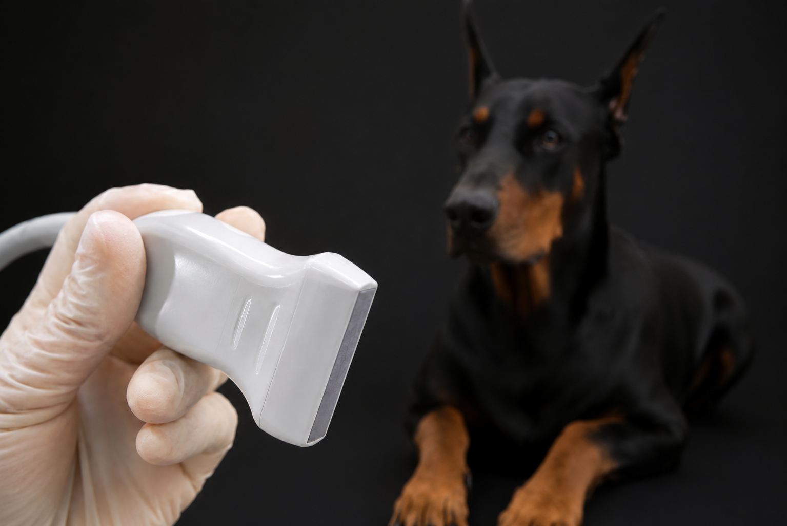

By referral only — like an MRI referral, not a primary workup. Send your imaging in for a remote read, or have Dr. Canapp perform the ultrasound in person at your clinic.
Every engagement is by referral. The only difference is who holds the probe: you acquire the images at your clinic and send them for a remote read, or Dr. Canapp comes to you and performs the ultrasound herself.
Acquire the ultrasound at your own clinic and submit the study through the secure portal. Dr. Canapp returns a written report — annotated key frames, diagnosis, and a treatment plan.
Dr. Canapp travels to your practice and performs the musculoskeletal ultrasound on your patients herself — scanning, interpreting in real time, and guiding injections alongside your team.
Real-time imaging of tendons, ligaments, muscles, and joint capsules. The primary modality of the practice — performed in person at VOSM (MD) and Circle Oak (CA) by referral, or read remotely from images you acquire.
PRP, regenerative medicine, orthobiologics, and intra-articular injection placement guided by real-time ultrasound — precision into the lesion, not near it. Performed in person at referral sites.
Case-by-case protocol for autologous regenerative therapies — selection criteria, dosing, follow-up imaging. Recommended in the read or in a follow-up consult.
Submit your MSK ultrasound imaging through the portal for expert interpretation, with a written report and annotated key frames.
The diagnostic edge converts directly to a therapeutic one. Ultrasound guidance lets PRP, orthobiologic, and regenerative protocols land inside the lesion — not near it. The same modality that found the injury is the one that delivers the treatment.

You acquire the ultrasound at your own clinic and submit the study through the secure referral portal. Dr. Canapp reads it and sends a report back — the workflow is the same every time. Best suited to graduates of the MSK course, whose acquisition matches how the read is structured.
You don't need to have trained with Dr. Canapp to send a case in. Outside referrals are welcome and reviewed individually. One caveat: because your acquisition technique may differ from the protocol she teaches, a submission isn't guaranteed to be readable or to yield a fully diagnostic report.
A site is one bilateral region. Pricing examples:
Assessed when imaging cannot be reviewed for technical reasons — non-standard acquisition angles, insufficient resolution, or artifact obscuring the structure of interest. It covers the time already spent attempting the read.
The course exists precisely to remove this uncertainty. Course graduates submit at the standard rate, with readability all but assured because the imaging was acquired the way the read is structured.
Explore the course →Email us a brief case summary and a representative will reach out shortly to get you started.
For clinics that would rather not acquire and ship imaging themselves, Dr. Canapp travels on-site and performs the diagnostic musculoskeletal ultrasound on your patients in person — alongside your team.
Dr. Canapp works with host clinics as a 1099 independent contractor. If on-site coverage is something your practice is considering, reach out and we'll talk through what it would look like.
The same diagnostic workup Dr. Canapp performs in clinic is taught — step by step — in the canine MSK ultrasound course. If you find yourself referring the same kinds of cases out, the course is built for you.